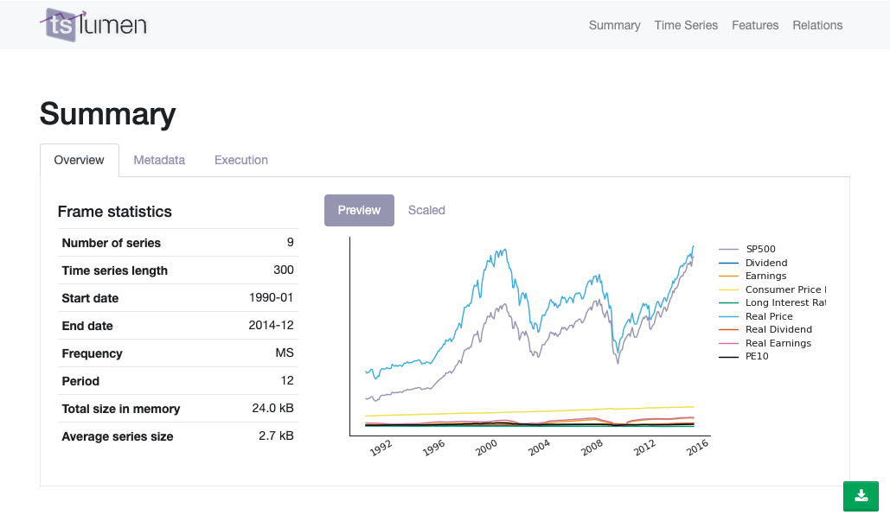
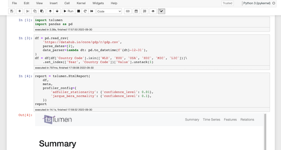
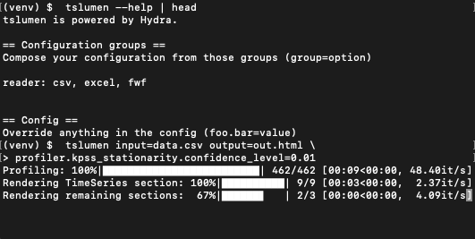
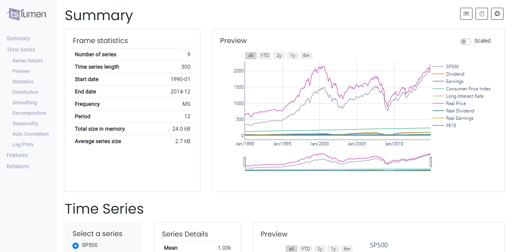

A library for exploratory analysis of Time Series data
Get StartedSelf-contained, HTML report
Easy to download and share
◯ ◯ ◯

Blends in with your notebooks platform
Highly configurable, customizable and extensible
◯ ◯ ◯

Ready to integrate your pipelines
Clean API and comprehensive command line interface
◯ ◯ ◯

Interactive Visualizations
Explore your timeseries with feature-rich plots
◯ ◯ ◯

Your library for Time Series EDA
tslumen helps bring to light the key characteristics of your time series data with rich, pre-canned artifacts, packed with charts and statistical information.
The primary goal of tslumen is to expedite and bring consistency to how time series EDA is performed, allowing you to uncover the fundamental aspects in seconds and focus on the analysis, instead of the boilerplate code.
Key features
- Platform agnostic, integrates nicely with your datascience workspace
- Built on open source technology and research
- Highly customizable and extensible
- Data (profiling results) completely detached from the visuals
- Can be executed from the command line
- Efficient execution using parallel processing
- Includes a great number of statistical information, including descriptive statistics statistical tests like KPSS or ADF, correlation, tsfeatures, etc.
- Various plots specifically tailored to time series analysis
- Self-contained HTML report that can easily be shared with interested parties
- Fully interactive dashboard for a richer experience and detailed exploration